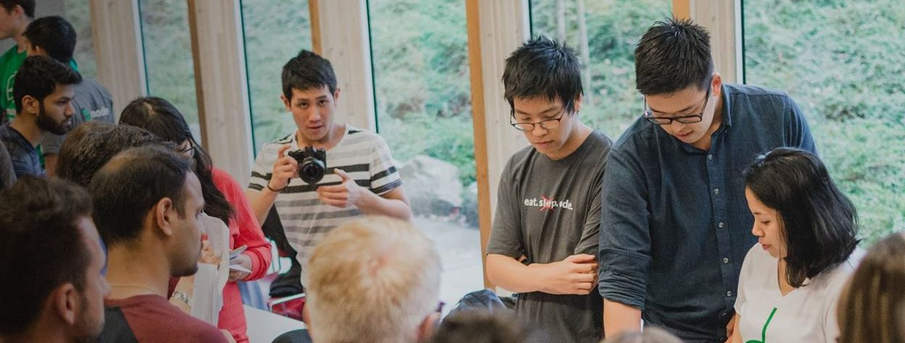
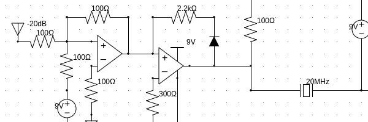
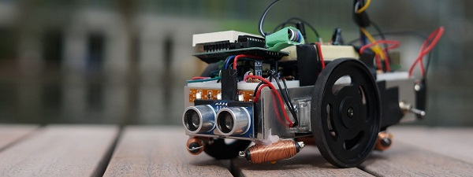

Projects
Sleep Logger Webapp
Sept 2017
Created at Lumohacks 2017 Hackathon. It features realtime database and authentication.
Project pageCircuitDraw
July 2017
A circuit drawing program that runs in the browser. It supports drawing basic passive and passive components including resistors, capacitors, diodes, OP-AMPs, integrated circuit chips, and more. This also supports saving and loading circuits using JSON.
Project pageDIY 3D Printer
June 2016
Magnetic Field Tracking Robot
April 2016
A stash of electronics, a pile of mechanical parts, a pair of microcontrollers, a repository of code, a team of six, and over two weeks of sleepness nights.
Project page Read report3D Dodging Game with Serial Controls
Game programmed in Processing (Java) and built controller using F38x microcontroller programmed in C.
April 2016
Reflow Oven Controller
Microcontroller powered SMT reflow over controller to follow a specific temperature profile. Programmed in 8051 Assembly.
Mar 2016
Temperature Monitor
Using 8051 microcontrollers to read from analog sensor and output to serial. Temperature is visualized on the computer using Processing (Java) and on a DIY LED strip. I also added a alarm for when temperature goes too high.
Mar 2016
Ticker LCD with Music
First project using 8051 microcontrollers. Used memory access, timers, and interrupts to make this looping animation with music.
Janurary 2016
InsectNN
Simulation of a small crawling insect that navigates using a neural network
December 2016
RISC Machine in Verilog HDL
RISC CPU designed using System Verilog. It runs a rudimentary OS programmed in ARM Assembly.
November 2016
SmartRockets (Evolution Simulator)
Small rockets that evolve over generations to increase fitness
September 2016
Minesweeper in C
July 2016
Rainwater Harvesting Simulation
Obtaining the best configuration for a rainwater harvetsting system design to maximize user satisfaction.
June 2016
Autonomous Claw
Arduino powered, custom made alumium chasis, autonomous operation to pick up objects
Janurary 2016
Adaptive Device CAD
Designing accessories for the disabled.
November 2015
Cardboard Chair
Foldable chair that supports up to 200 pounds
October 2015
Architecture Project
June 2015
FPV Racing Drone
FPV drone built by myself and has live video feedback via 5.8GHz radio transmission.
May 2015
Provincial Skills Canada 2015
May 2015
Arduino Explorations
November 2014

Experimented with tinkering and building using Arduino microcontrollers. I made various small projects using photo-sensors, servo motors, speakes, and LCD. I also wrote journals to keep track of my learning progress.
Open journalMicroscope CAD
June 2014

Reverse engineered a microscope assembly by precisely measuring the parts and replicating them in Autodesk Inventor in 3D. I also produced standard part drawings and parts list.